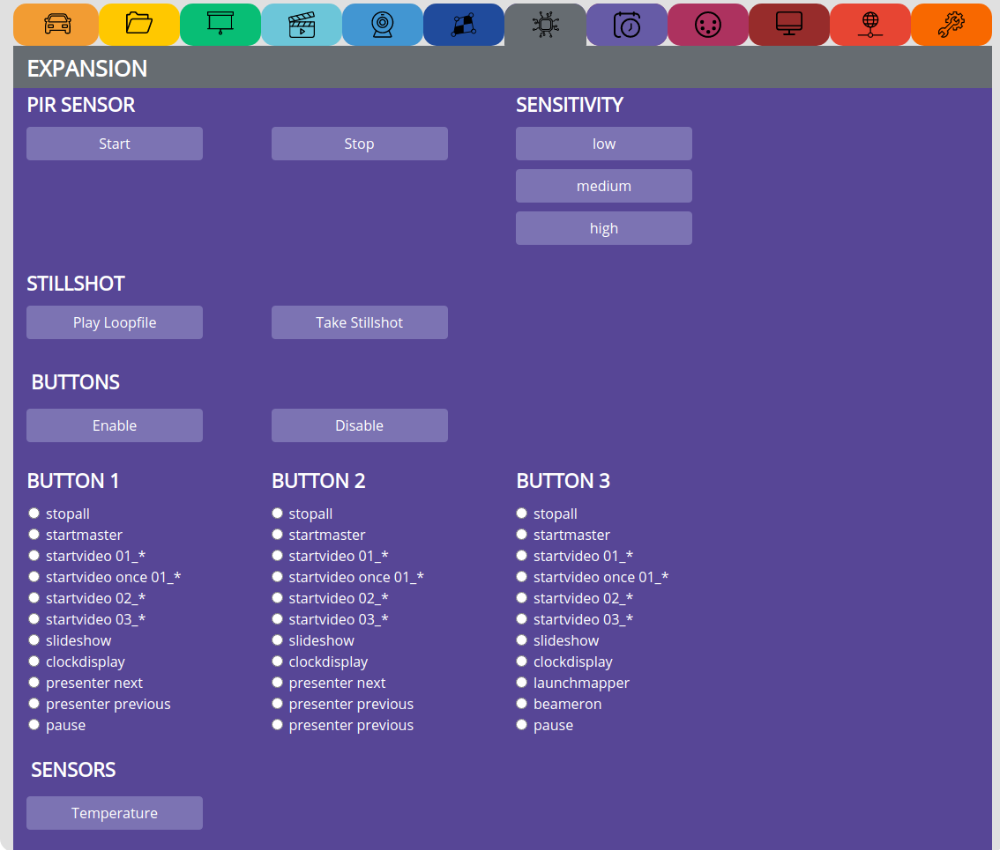
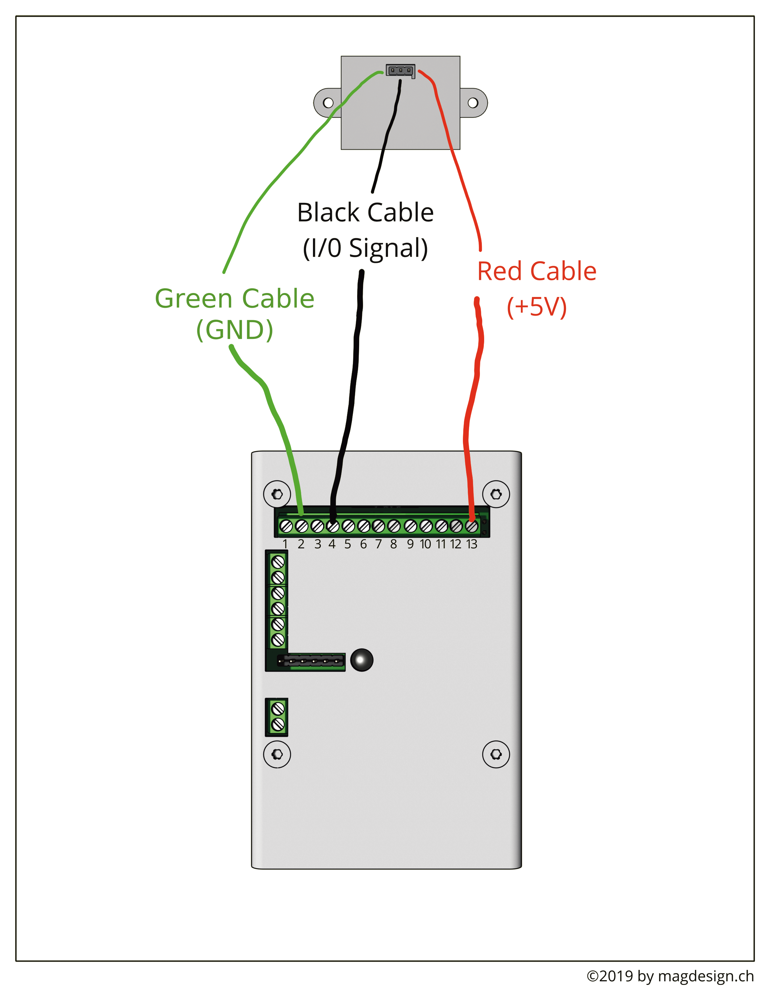
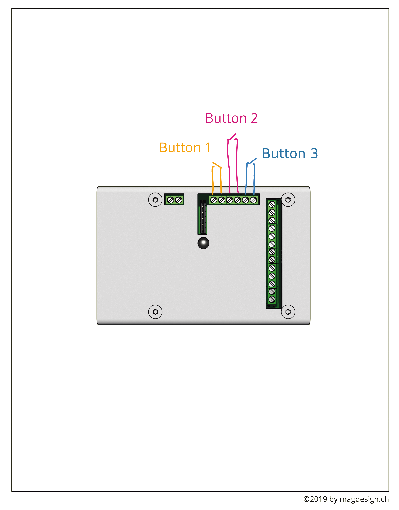

EXPANSION¶
This section holds all functions for the expansion board:
PIR SENSOR¶
With the PIR Sensor attached, you can create an interactive installation which triggers a random video as soon as the sensor detects motion.
Copy the loop (default, standby) video to the media/internal/pir/loop folder
Copy the trigger videos (can by any amount) to the media/internal/pir/trigger folder
see video tutorial: https://video.pocketvj.com/AVideo/video/13/pocketvj-exhibition-pir-sensor
CONNECT PIR¶
BUTTONS¶
see video tutorial: https://video.pocketvj.com/AVideo/video/8/pocketvj-exhibition-button-connecting
CONNECT BUTTONS¶
SENSORS¶
Temperature => see temperature/humidity from temperature sensor
SCHEMATICS¶
Attach a DHT11 Temperature/Humidity Sensor as shown in the diagram.
+5V goes to PIN13
GND goes to PIN1
S Signal goes to PIN5